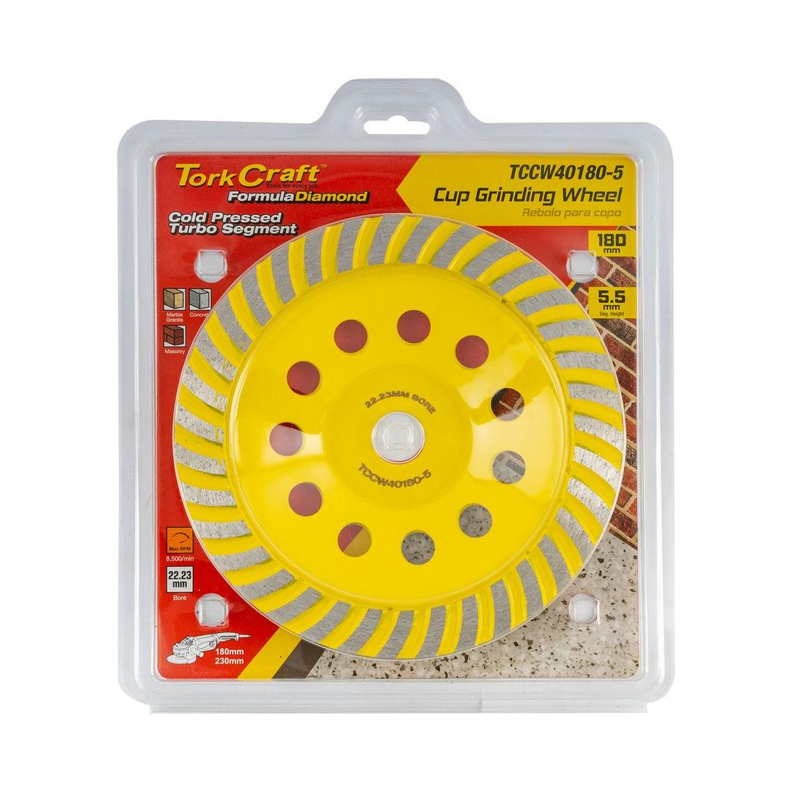
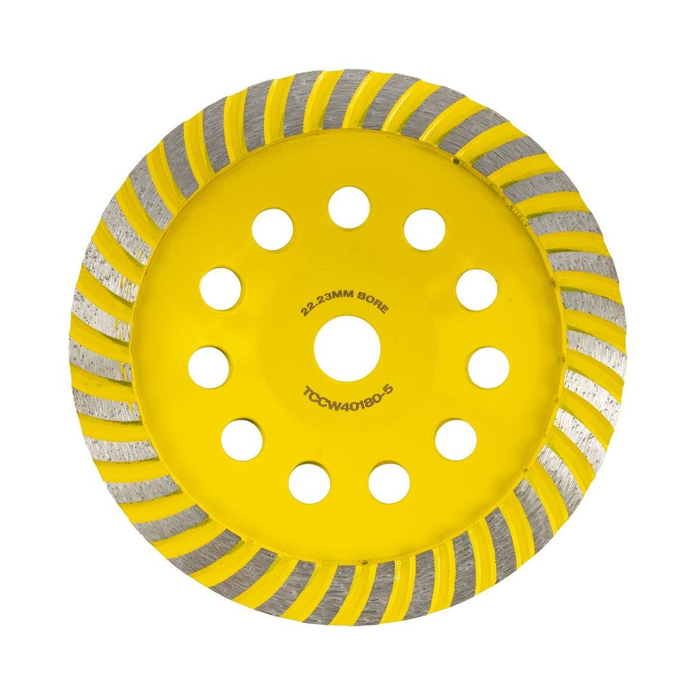

TCCW40180-5


Cup Diameter: 180mm
Arbor: 22.23mm
Max RPM: 8 500
Segment Configuration: Double Row
Classification: Yellow (Standard)
This economical, double-row diamond cup wheel is a robust and efficient tool designed for heavy-duty surface grinding and leveling. Measuring a substantial 180mm in diameter with a standard 22.23mm bore, it is ideal for use with larger angle grinders, covering a wide surface area quickly. The cold-pressed manufacturing process ensures durability, while the double-row configuration of diamond segments provides an aggressive grinding action, perfect for rapid material removal on concrete, masonry, and stone. It is the perfect choice for professional contractors and serious DIY users who need a reliable and affordable solution for large-scale jobs like grinding down floors, removing tough coatings, and preparing large surfaces for new installations.
Application: